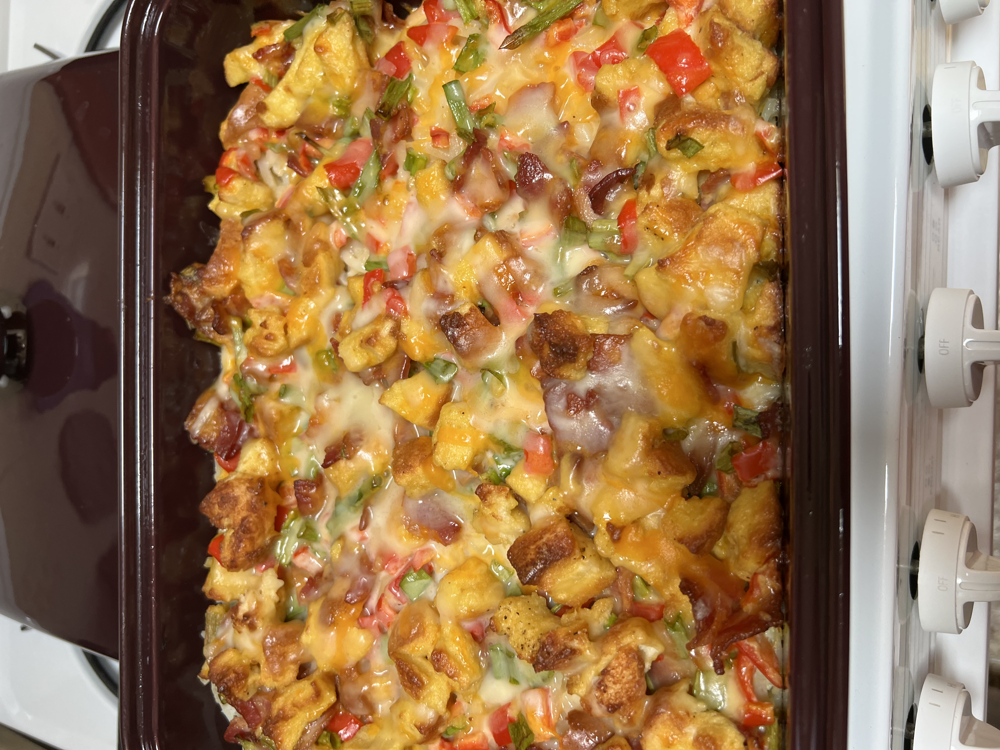

Egg Casserole

Ingredients
- 6 eggs, whisked
- 1 cup shredded Cheddar cheese
- 6 slices bacon, diced
- 2 slices bread, cubed
- ⅓ red bell pepper, diced
- 2 green onions, chopped
- 3 tablespoons milk
- ½ teaspoon minced garlic, or to taste (Optional)
- Salt and ground black pepper to taste
Steps
- Preheat the oven to 350 degrees F (175 degrees C). Grease a 9x13-inch baking dish.
- Mix eggs, cheese, bacon, bread, red bell pepper, green onion, milk, garlic, salt, and black pepper together in a bowl until well-combined; pour into the prepared baking dish.
- Bake in the preheated oven until eggs are set, about 20 to 25 minutes.